since n > 4.
Unit 16 Answers
1. Let P(n) be " 3 + 3 * 5 + 3 * 52+ ... + 3 * 5n = 3 (5n+1 - 1)/4 whenever n is a nonnegative integer".
Basis step: P(0) is true since 3*50 = 3 = 3 (50+1 - 1)/4
Inductive step: Assume that P(n) is true.
Then 3 + 3 * 5 +
3 * 52+ ... + 3 * 5n
+ 3 * 5n + 1
= 3 (5n+1 - 1 )/4 + 3 * 5n + 1
= ( 3 (5n+1 - 1) + 3*4*5n+1 )/4
= 3 ( 5n+2 - 1 )/4
= 3 ( 5(n+1)+1 - 1 )/4
Hence P(n + 1) is true.
2. Let P(n) be "1² + 3² + ... + (2n + 1)² = (n + 1)(2n + 1)(2n + 3)/3 whenever n is a nonnegative integer".
Basis step: P(0) is true since 1² = 1 = (0 + 1)(2*0 + 1)(2*0 + 3)/3.
Inductive step: Assumethat P(n) is true.
Then 1² + 3² + ... + (2n + 1)² + (2(n+ 1) + 1)²
=
(n + 1)(2n + 1)(2n + 3)/3 + (2n + 3)²
=
(2n + 3)[(n + 1)(2n + 1)/3 + (2n + 3)]
=
(2n+ 3)(2n² + 9n + 10)/3
=
(2n + 3)(2n + 5)(n +2)/3
=
((n+ 1) + 1)(2(n+1)+1)(2(n+1) + 3)/3.
Hence P(n + 1) is true.
3. Let P(n) be "2n > n² whenever n is an integer greater than 4 ".
Basis step: P(5) is true since 25 = 32 > 25 =5².
Inductive step: Assume that P(n) is true, that is,
2n> n².
Then 2n+1 = 2*2n>
n² + n² > n² + 4n
 n²+ 2n + 1 = (n+1)²
n²+ 2n + 1 = (n+1)²
since n > 4.
Hence P(n + 1) is true.
4. Let P(n) be "a postage of n cents can be formed using 3-cent and 5-cent stamps if n is greater than 7 ".
Basis step: P(8) is true since 8 cents postage can be formed with one 3-cent and one 5-cent stamp.
Inductive step: Assume that P(n) is true, that is, postage of
n cents can be formed using 3-cent and 5-cent stamps.
We will show how to form postage of n + 1
cents. By the inductive hypothesis postage of n cents can be formed
using 3-cent and 5-cent stamps.
If this included a 5-cent stamp, replace this 5-cent stamp with two 3-cent stamps to obtain
n + 1 cents postage. Otherwise, only 3-cent stamps were used and n
 9.
Hence there are at least three 3-cent stamps forming n cents.
Remove three of these 3-cent stamps and replace them with two 5-cent stamps to obtain
n + 1 cents postage.
9.
Hence there are at least three 3-cent stamps forming n cents.
Remove three of these 3-cent stamps and replace them with two 5-cent stamps to obtain
n + 1 cents postage.
Hence P(n + 1) is true.
5. Let P(n) be " n5 - n is divisible by 5 when n is a nonnegative integer ".
Basis step: P(0) is true since 05- 0 = 0 and 0 is divisible by 5.
Inductive step: Assume that P(n) is true, that is,
n5 - 5 is divisible by 5.
Then
(n+1)5- (n+1)
= (n5 + 5n4+ 10n³ +
10n² + 5n + 1) - (n+1)
= (n5- n) + 5(n4 +
2n³ + 2n² + n), and the last quantity is also divisible by 5,
since both terms in this
sum are divisible by 5.
6. Let
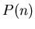 be the statement
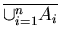 =
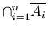.
Basis step: When 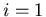, then
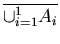 =
 .
Also
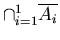 =
.
Also
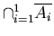 =
 .
Hence 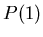 is true.
.
Hence 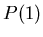 is true.
Inductive step: Assume that is true, that is,
=
.
Then
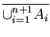
= 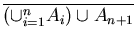
= 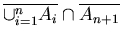
= 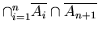
=
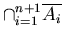.
Hence 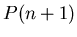 is true.